Bochra Nettour
|
Yapay zekâ, bilgisayarlı görü ve otonom sistemler alanlarında; araştırma odaklı fikirleri gerçek sistemlerde uygulanabilir yazılım çözümlerine dönüştürmeye odaklanıyorum. Görüntü işleme, derin öğrenme, RAG sistemleri ve otonom İHA yazılımları üzerine çalışıyor; geliştirdiğim çözümleri gerçek ortam testleri ve sistem entegrasyonlarıyla doğrulamaya önem veriyorum.
Projelerin ötesinde; iz bırakan anlar
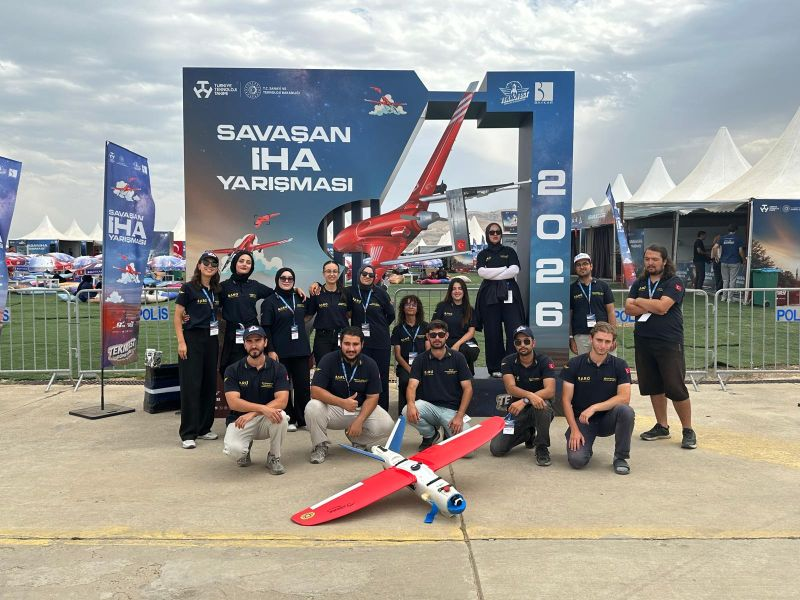
TEKNOFEST Savaşan İHA 2026 finalist sürecinde birlikte çalıştığımız TUNGA SAYE ekibi.
08.2026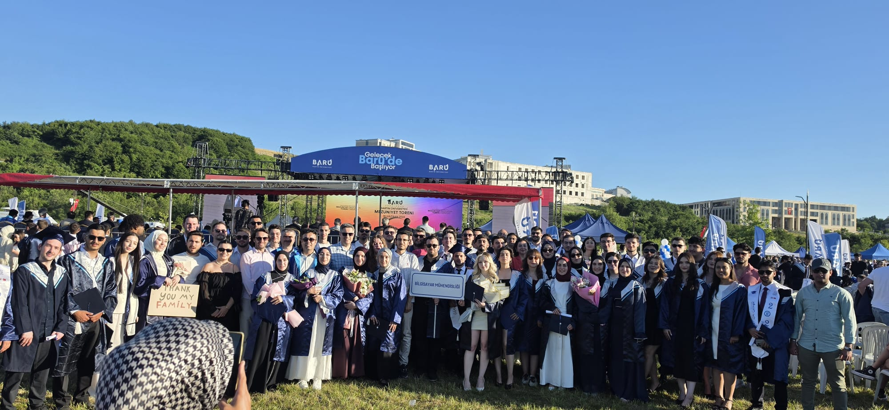
Bartın Üniversitesi Bilgisayar Mühendisliği bölümünden Onur Derecesi ile mezuniyetim.
06.2026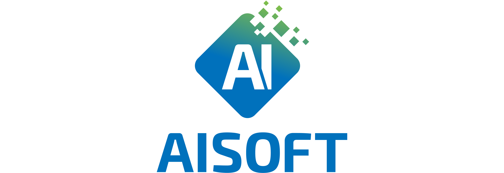
AI Soft’ta dört aylık Yapay Zekâ stajımı tamamlayarak yapay zekâ destekli video analiz, insan tanıma ve pose estimation çalışmalarına katkı sağladım.
06.2026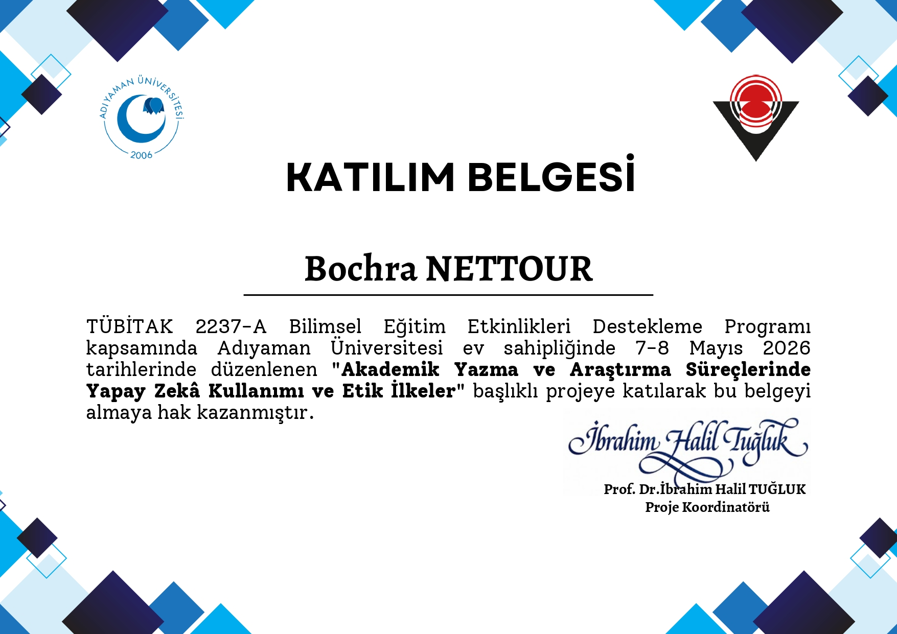
“Akademik Yazma ve Araştırma Süreçlerinde Yapay Zekâ Kullanımı ve Etik İlkeler” eğitimine katılarak akademik araştırmalarda yapay zekânın doğru ve etik kullanımına yönelik bilgi birikimimi geliştirdim.
05.2026Sertifikayı Görüntüle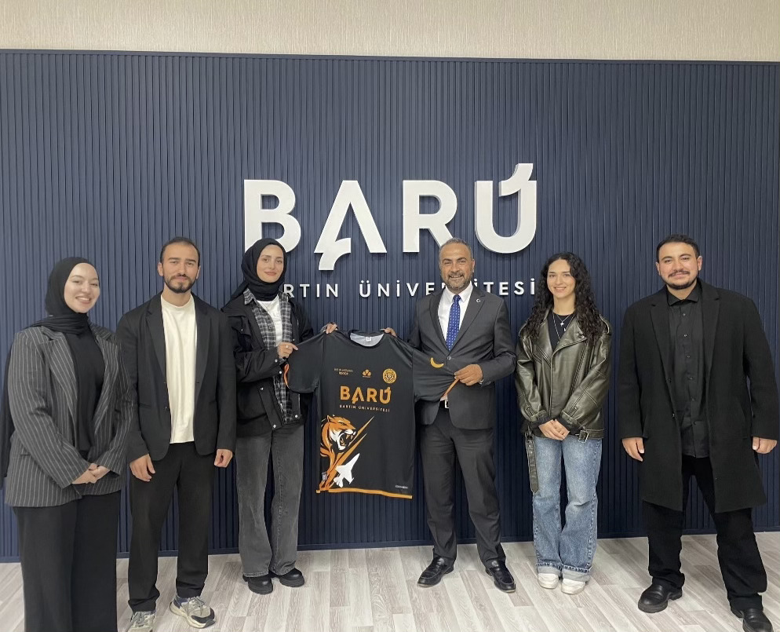
Bartın Üniversitesi’nde ekibimizle yürüttüğümüz proje ve çalışmaların ardından güzel bir hatıra.
02.2026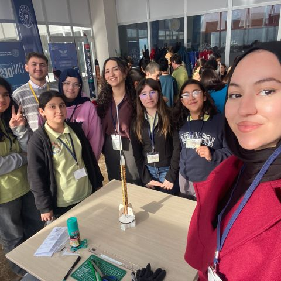
T.C. Gençlik ve Spor Bakanlığı tarafından desteklenen proje kapsamında ortaokul öğrencilerini üniversitemizde ağırlayarak havacılık ve teknolojiyle buluşturduk.
01.2026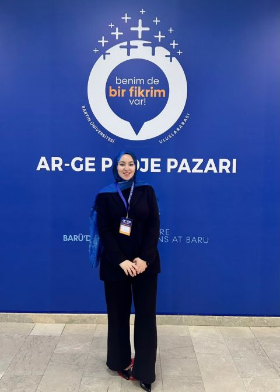
TUNGA SAYE standında takımın Yazılım Kaptanı olarak İHA sistemimizi öğrencilerden mühendislere, akademisyenlere ve yöneticilere kadar farklı ziyaretçi gruplarına anlattım.
12.2025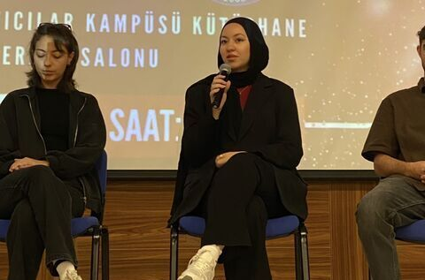
Bartın Üniversitesi’nde Türkiye Teknoloji Takımı Vakfı, TEKNOFEST Koordinatörlüğü ve Kulübü tarafından düzenlenen etkinlikte, TEKNOFEST finalisti TUNGA SAYE ekibi olarak sahnedeydik.
11.2025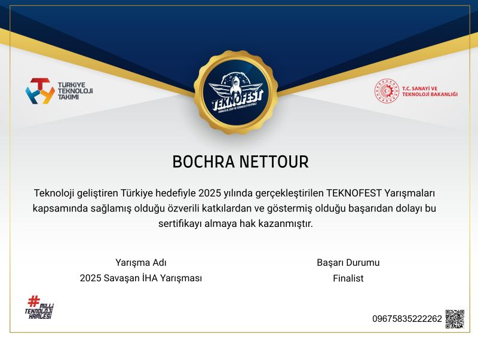
TEKNOFEST Savaşan İHA Yarışması 2025 finalist sürecine ait başarı sertifikam.
11.2025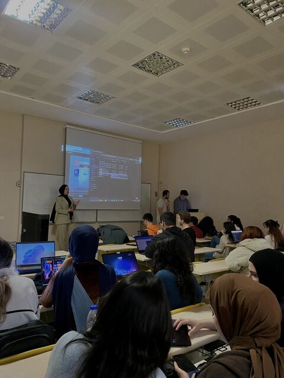
Yazılım Kaptanı olarak ekip üyelerine görüntü işleme, İHA yazılımları ve mühendislik geliştirme süreçleri üzerine eğitimler verdim.
10.2025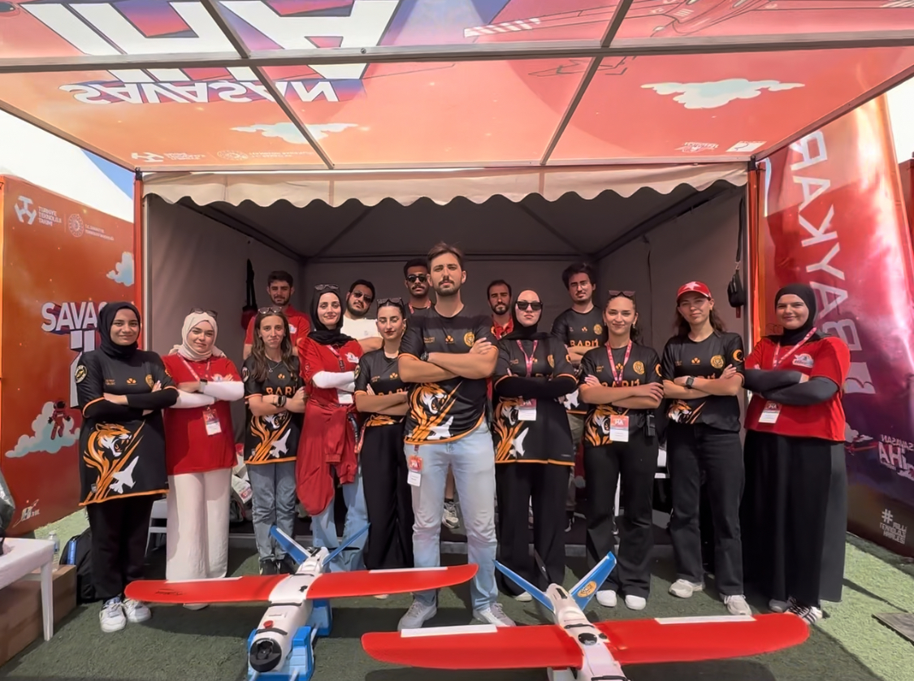
TEKNOFEST Savaşan İHA 2025 finalist sürecinde birlikte yarıştığımız ekip.
08.2025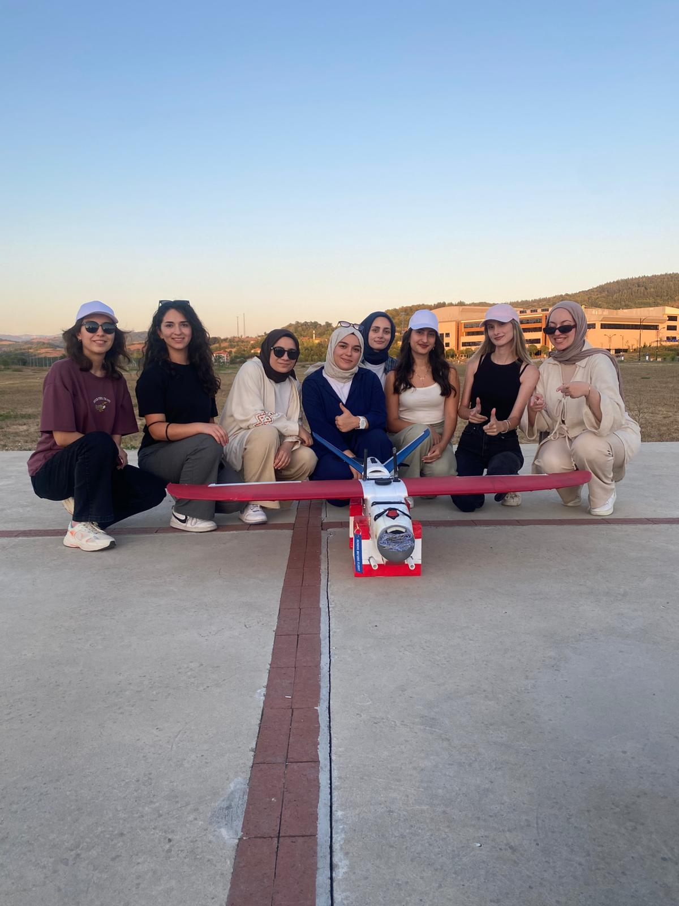
TUNGA SAYE’nin kadın ekip üyeleriyle yoğun bir çalışma ve hazırlık döneminden güzel bir hatıra.
07.2025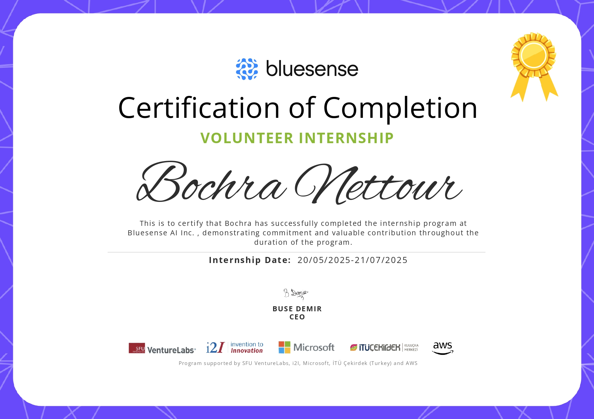
Bluesense AI’da iki aylık Yapay Zekâ stajımı tamamlayarak görüntü ön işleme, veri hazırlama, model eğitimi ve değerlendirme süreçlerinde çalıştım.
07.2025Sertifikayı GörüntüleYapay zekâdan otonom sistemlere uzanan mühendislik yolculuğum

Bilgisayar Mühendisliği mezunuyum ve yüksek lisans eğitimimde yapay zekâ, bilgisayarlı görü ve otonom sistemlere odaklanıyorum. Araştırma fikirlerini test edilebilir, ölçülebilir ve gerçek ortamlarda kullanılabilir sistemlere dönüştürmekten keyif alıyorum.
TUNGA SAYE UAV Team'de Yazılım Kaptanı olarak görüntü işleme, yapay zekâ, yer kontrol ve uçuş yazılımı çalışmalarını koordine ediyorum. Takımımız 2025 ve 2026 yıllarında TEKNOFEST Savaşan İHA finaline kaldı; 2025 video değerlendirme aşamasında Türkiye 3.'sü olduk.
Proje portföyüm; gerçek zamanlı İHA tespit ve takibi, QR tabanlı otonom görevler, yerel çalışan adaptif RAG sistemi, MRI tabanlı erken evre Alzheimer sınıflandırması ve modüler C++/Qt yer kontrol istasyonunu kapsıyor.
Arapça, İngilizce ve Türkçe dillerinde etkin iletişim kurabiliyorum. Çalışmalarımda ekip içi iş birliğine, güçlü teknik iletişime ve geliştirdiğim çözümlerin yalnızca teoride değil, gerçek sistemler üzerinde test edilip doğrulanmasına önem veriyorum.
Gerçek dünya uygulamalarına yönelik yapay zekâ, bilgisayarlı görü ve otonom sistem projeleri
ID tabanlı hedef seçimi ve yeniden yakalama mekanizmaları içeren gerçek zamanlı İHA tespit ve takip sistemi geliştirdim; sistem gerçek uçuşta hedef üzerinde 5+ saniye kesintisiz takip sağladı. Ayrıca çok aşamalı QR sistemiyle dalış sırasında yaklaşık 60 metreden 2×2 m hedefi başarıyla okuduk ve Herelink RTSP görüntüsünü FFmpeg tabanlı kesintisiz hat üzerinden işleme, kayıt ve canlı görüntülemeye dağıttım.
GitHub'da İncele →TUNGA ekibinin kamuya açık olmayan teknik dokümanlarını harici yapay zekâ servislerine göndermeden sorgulayabilmesi için tamamen yerel çalışan bir RAG sistemi geliştirdim. Adaptive query planning, evidence grading, corrective retrieval ve kaynak-temelli cevap üretimi mekanizmalarını uyguladım. 60 soruluk geliştirme benchmarkında Soft Router V2 ile %95 Hit@10, %90.8 Recall@10 ve 0.824 MRR@10 elde ettim.
GitHub'da İncele →ADNI 3D yapısal MRI verileri üzerinde CN–MCI sınıflandırması için klinik karar destek sistemi geliştirdim. 3D ResNet-18, DenseNet121 ve ResNet50 mimarilerini; MNI152 hizalama, beyin maskeleme, normalizasyon, subject-level bölme, sınıf dengeleme, transfer learning ve augmentation süreçleriyle karşılaştırdım. En dengeli DenseNet121 modeli %71,18 doğruluk, %74,12 MCI duyarlılığı ve %68,24 CN özgüllüğü elde etti.
GitHub'da İncele →TEKNOFEST Savaşan İHA Yarışması kapsamında yaklaşık 40 İHA'nın eşzamanlı telemetri ve harita takibini destekleyen modüler bir Yer Kontrol İstasyonu geliştirdim. Uçuş modu takibi, telemetri, rakip İHA analizi, waypoint yönetimi, görev kontrolü, kamera görüntüsü, yarışma sunucusu haberleşması ile kilitlenme ve kamikaze süreçlerini tek arayüzde birleştirdim.
GitHub'da İncele →Akademik, teknik ve profesyonel ortamlarda etkin kullandığım diller
Ana Dil
C1 · İleri Seviye
C1 · İleri Seviye
Yapay zekâ geliştirme, İHA mühendisliği ve teknik liderlik
Havacılık ve Uzay Kulübü, Bartın
AI Soft, Bursa
Bluesense AI, İstanbul - Uzaktan
Yapay zekâ, bilgisayarlı görü ve otonom sistemlerde kullandığım teknolojiler
Akademik geçmişim
Kocaeli Üniversitesi, 2026 - Devam Ediyor
Odak: Yapay Zekâ ve Otonom Sistemler
Bartın Üniversitesi, 2022 - 2026
GNO: 3.10/4.00 · Onur Derecesi ile Mezuniyet
Saudi Secondary School in Islamabad
Fen Bilimleri · 99/100 · Okul Birincisi
Medikal yapay zekâ projemden doğan akademik çalışma
Erken evre Alzheimer MRI sınıflandırma projemden geliştirilen; yüksek MMSE skorlarına sahip bireylerde bilişsel olarak normal kişiler ile MCI vakalarının ayrımına odaklanan akademik çalışma.
Yeni fikirler, projeler ve profesyonel bağlantılar için iletişime geçebilirsiniz.
Yapay zekâ, bilgisayarlı görü ve otonom sistemler odağında; gerçek problemlere uygulanabilen, uçtan uca yazılım çözümleri geliştiriyorum. Teknik bilgi birikimimi geliştirebileceğim, sorumluluk alabileceğim ve güçlü ekiplerle birlikte üretim yapabileceğim yeni profesyonel fırsatlara açığım.